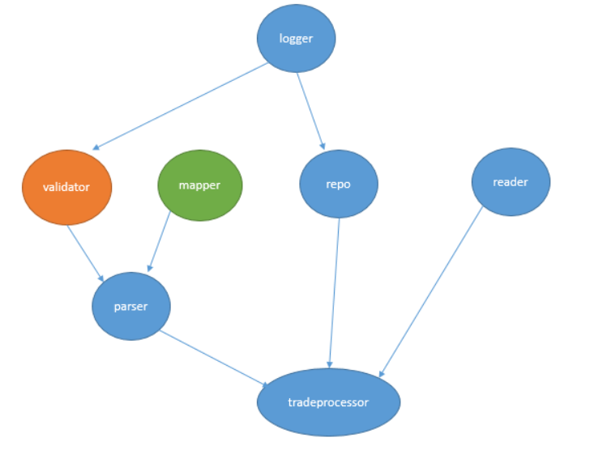

Demos
For this first one. We are going to read from a text file and store to a text file. The record structure has now changed and the new structure is shown below;
The ID is supposed to be 10 characters long and must only contain upper letters and numbers.
The location can be any length and can contain both lower and upper case letters.
The product name can be any length but only letters.
The amount must be an integer.
We will log to a file this time. So let us roll up a file logger.
1class FileLogger(Logger):
2 def __init__(self, filename):
3 self.filename = filename
4
5 def log(self, message):
6 with open(self.filename, 'a') as f:
7 f.write(f'{message}\n')
This time round, we will map to a user defined class called Customer.
1class Customer:
2 def __init__(self, id, loc, product, amount):
3 self.id = id
4 self.loc = loc
5 self.product = product
6 self.amount = amount
7
8 def __str__():
9 return f'[{self.id}, {self.loc}, {self.product}, {self.amount}]'
Cool, let us define a new Mapper class.
1class CustomerMapper(Mapper):
2 def map(self, processed_record: List[str]) -> TradeRecord:
3 id = processed_record[0]
4 location = processed_record[1]
5 product = processed_record[2]
6 amount = float(processed_record[3])
7 customer = Customer(id, location,product, amount)
8 return customer
We will assume that different parts of the record are separated by commas so, we will reuse our CommaParser.
1class CommaParser(Parser):
2 def __init__(self, validator: Validator, mapper: Mapper):
3 Parser.__init__(self, validator, mapper)
4
5 def parse(self, record: str)-> List[str]:
6 return record.split(',')
We will be reading from a text file so we can reuse our old Text file reader.
1class FileReader(Reader):
2 def __init__(self, filename):
3 self.filename = filename
4
5 def read_data(self):
6 trade_records: List[str] = []
7 with open(self.filename) as data_source:
8 for trade_record in data_source:
9 trade_records.append(trade_record.rstrip())
10 return trade_records
Now for the validator, things are a little bit different. We don’t want to write the validator class ourselves since it is not our expertise. And still, we have access to a third party class but we haven’t access to it’s source code so we can not make it inherit from our Validator class.
1class FancyValidator:
2 def approve(self, word: str):
3 if len(word) == 10:
4 if word.isalnum():
5 return True
6 else:
7 return False
8 else:
9 return False
10
11 def isword(self, loc: str):
12 if loc.isalpha():
13 return True
14 else:
15 return False
16
17 def isnumber(self, number: str):
18 if number.isdigit():
19 return True
20 else:
21 return False
Is there any design pattern to save us??
Let us create a new class that inherits from our Validator abstraction. We are going to use this class to wrap the third party class.
Let’s dive into some code…
1class Adapter(Validator):
2 def __init__(self, logger: Logger, adaptee: FancyValidator):
3 self.logger = logger
4 self.adaptee = adaptee
5
6
7 def validate(self, record: List[str], index: int) -> bool:
8 if len(record) != 4: #check number of fields
9 self.logger.log(f'Line {index} malformed. Only {len(record)} field(s) found.')
10 return False
11 if not self.adaptee.approve(record[0]): #check id
12 self.logger.log(f'Id on line {index} malformed: {record[0]}')
13 return False
14 if not self.adaptee.isword(record[1]): #check location
15 self.logger.log(f"Location on {index} is invalid: '{record[1]}'")
16 return False
17 if not self.adaptee.isword(record[2]): #check product
18 self.logger.log(f"Product name on {index} is invalid: '{record[2]}'")
19 return False
20 if not self.adaptee.isnumber(record[3]):
21 self.logger.log(f'Amount on line {index} not a valid int:{record[3]}')
22 return False
23 return True
Important
- The Adapter Pattern
Convert the interface of a class into another interface clients expert. Adapter lets classes work together that couldn’t otherwise because of incompatible interfaces.
Finally we have the TradeProcessor class.
 1mapper = CustomerMapper()
2logger = FileLogger('run.log')
3
4fancy_validator = FancyValidator()
5validator = Adapter(logger, fancy_validator)
6parser = CommaParser(validator, mapper)
7
8repo = FileRepo('store.txt')
9
10reader = FileReader('Data2.txt')
11tradeProcessor = TradeProcessor(reader, parser, repo)
12tradeProcessor.process_trades()